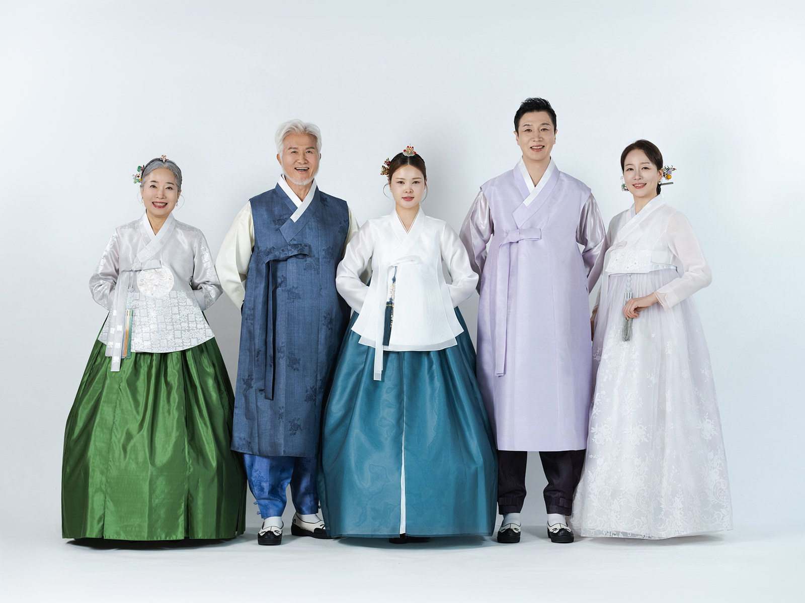
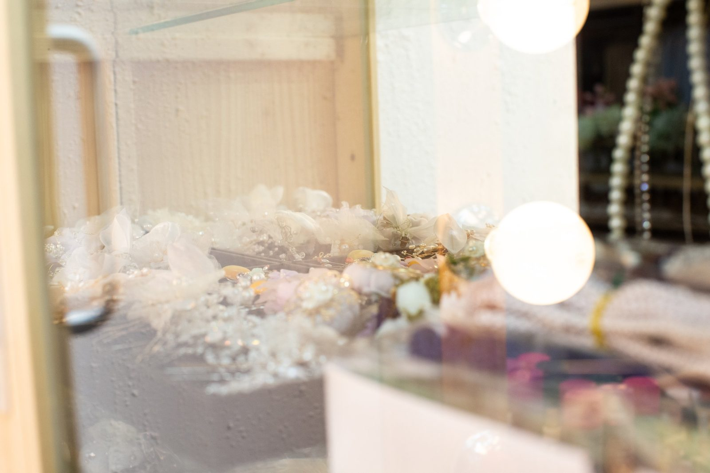
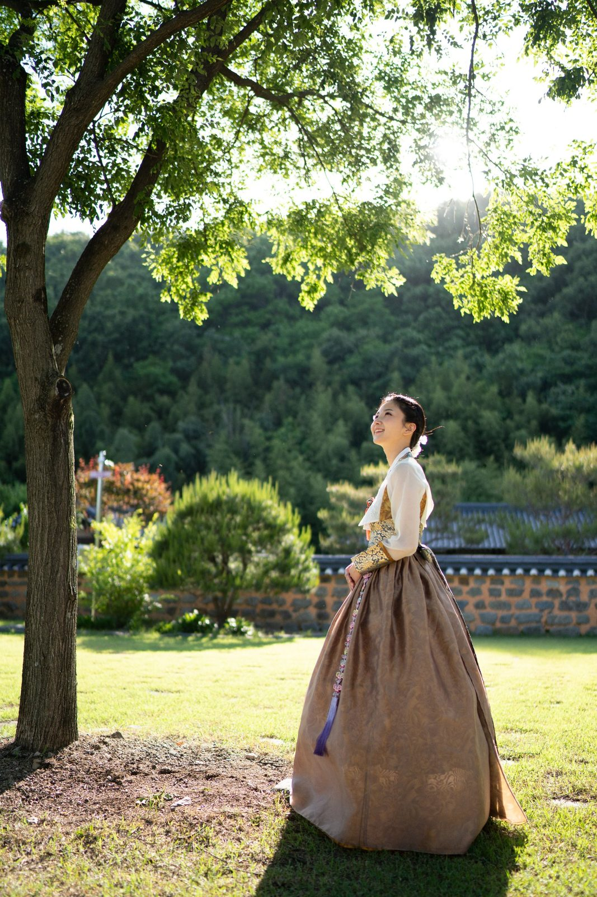
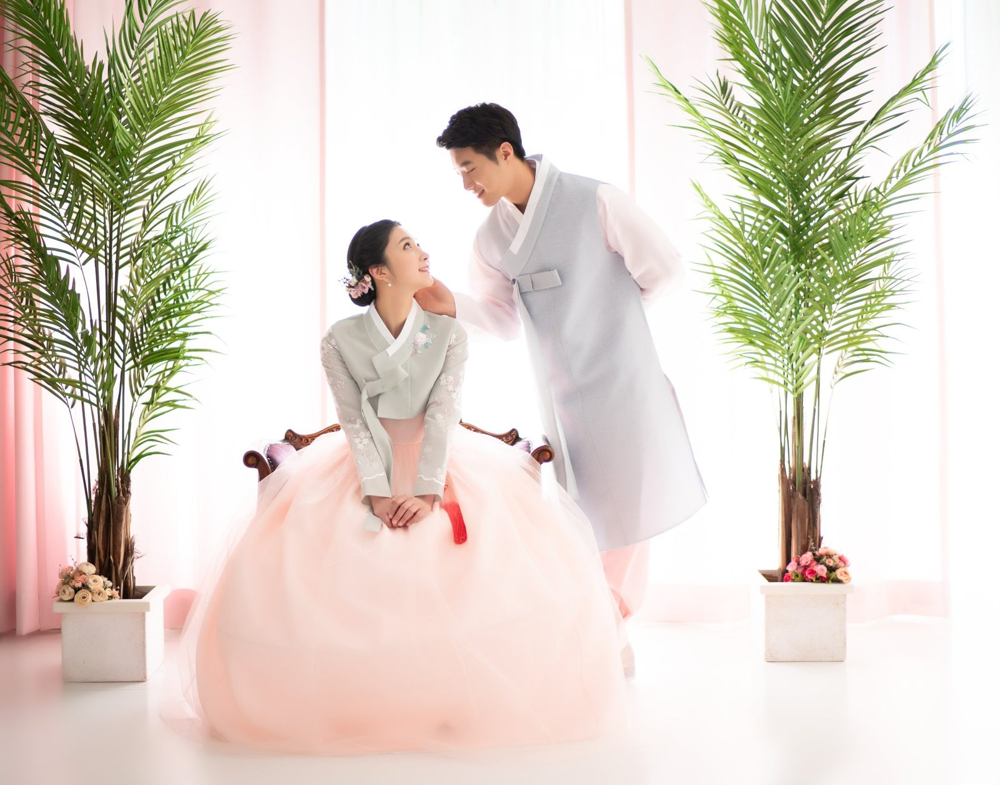
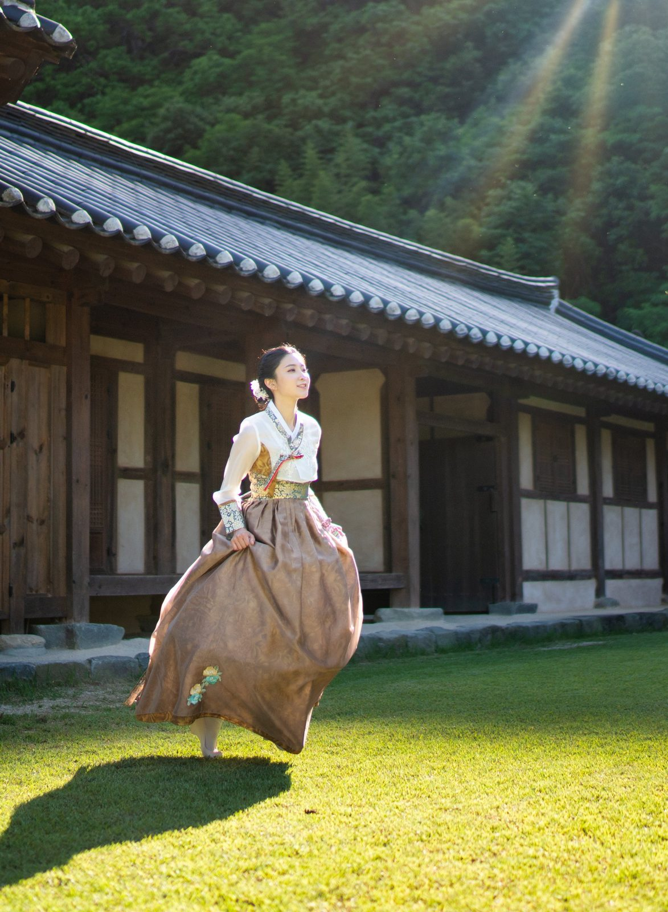
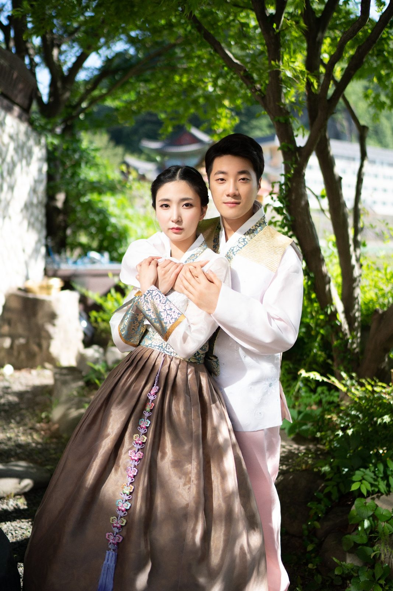
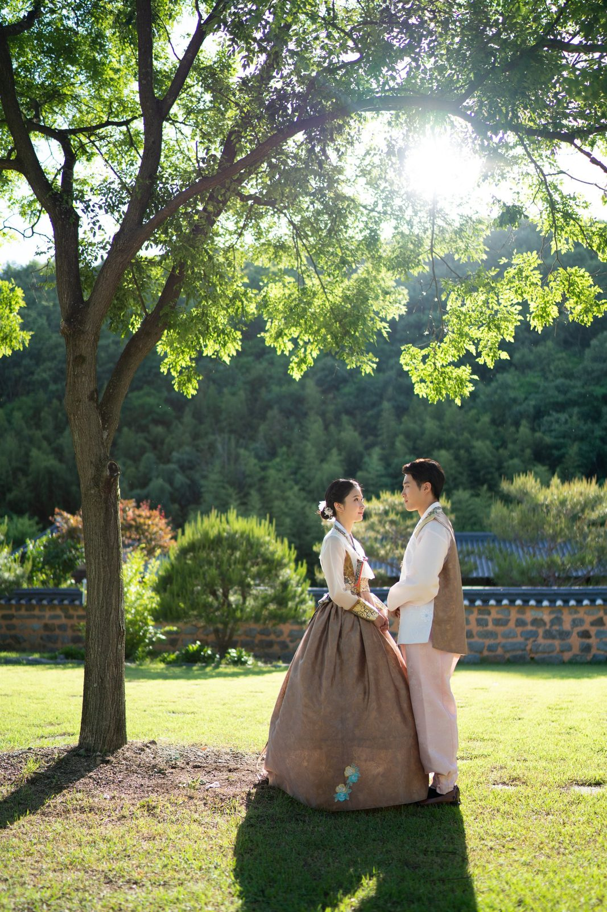
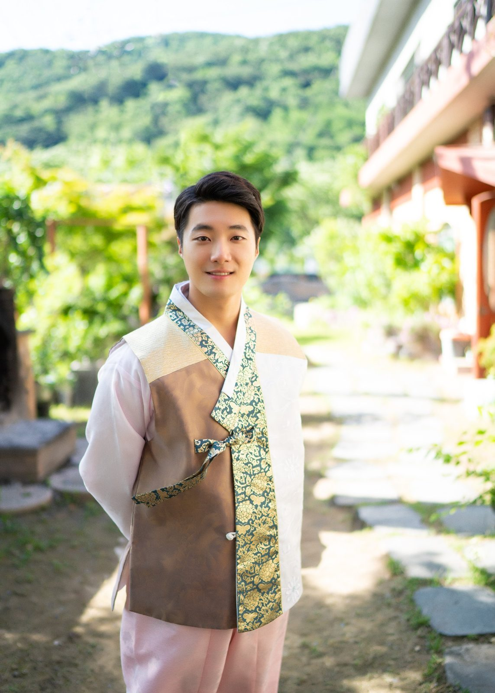
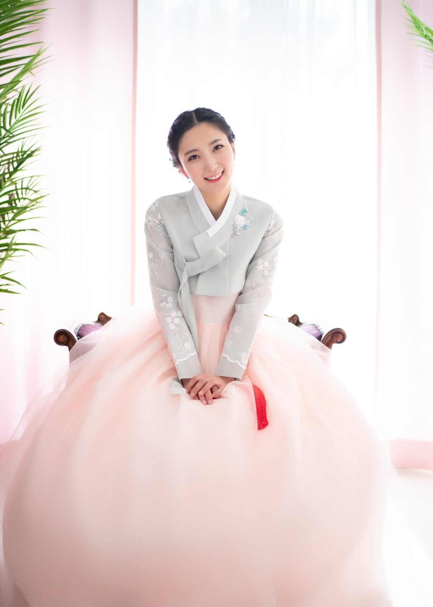
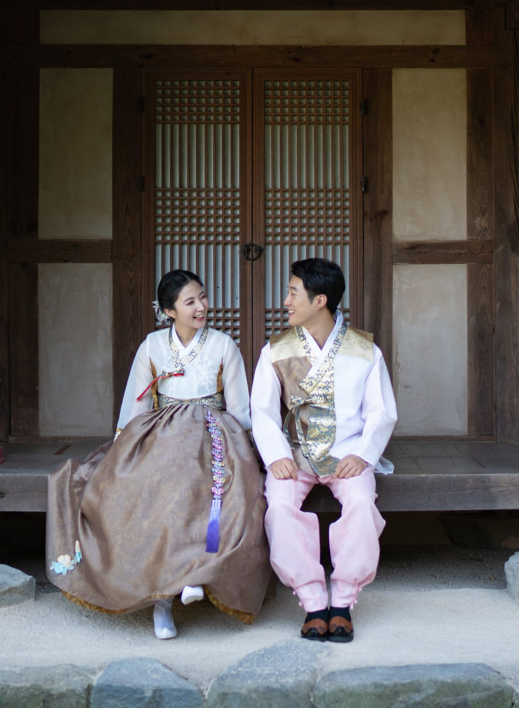

창원 한복 가족사진 — 설날과 추석, 온 가족이 한복을 입는 날
2026-10-19 발행
창원 한복 가족사진은 명절에만 입던 한복을 온 가족이 함께 입고 서는 촬영입니다. 설날과 추석, 어버이날, 회갑과 칠순처럼 가족이 한자리에 모이는 날에 특히 잘 어울립니다. 한복을 입은 가족은 평소와 조금 다른 얼굴이 됩니다. 자세가 달라지고, 말투가 조금 느려지고, 사진을 찍는 동안 서로를 한 번 더 쳐다보게 됩니다.

사랑이야기 스튜디오 창원점은 경남 창원시 성산구 원이대로 652, 상남동 롯데빌딩 2층에 있습니다. 한복 촬영은 옷을 고르는 일에서 시작합니다. 의상실에 저고리와 치마, 두루마기, 아동 한복까지 걸려 있어 빈손으로 오셔도 됩니다. 어떤 날인지, 누가 오시는지 먼저 말씀해 주시면 그 자리에서 함께 골라 드립니다.

한복은 색을 어떻게 맞추느냐가 사진의 절반입니다. 어머니는 자주색, 아버지는 남색, 아이는 연한 분홍처럼 조금씩 다른 색을 고르면 한 화면에서 서로를 살려 줍니다. 같은 색으로 통일하시면 차분해지지만, 사진에서는 가족이 한 사람씩 눈에 들어오지 않습니다. 어르신 한 분만 밝은 색을 입으셔도 좋습니다.

한복 가족사진은 언제 찍으면 좋을까요? 명절 연휴가 끝난 직후가 가장 좋습니다. 연휴에는 다들 바쁘고, 연휴 뒤에는 한복이 아직 집에 있으니까요. 설 전에 미리 찍어 두고 명절에 가족에게 나눠 보시는 방법도 좋습니다. 아이가 어리면 오전 시간이 가장 편안합니다. 점심을 먹고 나면 아이들은 대개 졸립니다.

촬영은 실내 촬영룸과 야외 마당을 함께 씁니다. 실내에서는 차분하게 가족 단체사진을 찍고, 밖으로 나가면 돌담과 나무를 배경으로 걸어오는 사진을 담습니다. 한복은 걸을 때 치맛자락이 살아나서, 서 있는 사진보다 훨씬 자연스럽습니다. 같은 자리에서 서로 마주 보게 하는 것만으로도 사진이 달라집니다.

촬영 순서도 정해 두는 편이 좋습니다. 아이를 먼저 찍고, 어르신은 앉아서 찍습니다. 아이는 오래 서 있지 못하고, 어르신은 오래 서 계시면 어깨가 굳기 때문입니다. 큰 단체사진을 먼저 찍어 두면 마음이 놓여서인지 그 뒤 사진들이 훨씬 편해집니다. 순서를 미리 정해 두면 촬영 시간도 짧아집니다.
오실 때 따로 준비하실 것은 없습니다. 한복은 저희가 입혀 드리고, 머리와 화장도 그 자리에서 정리합니다. 다만 평소 쓰시던 안경이나 귀걸이는 챙겨 오시면 좋습니다. 사진에서 얼굴이 가장 편해 보이는 것은 익숙한 것이기 때문입니다.
한복 촬영은 대개 한 시간에서 한 시간 반 정도 걸립니다. 가족이 많으면 조금 더 걸립니다. 아이가 있으시면 중간에 쉬는 시간을 넣습니다. 쉬는 시간에 아이가 마음을 놓아서, 그 뒤 사진이 훨씬 좋아집니다.
봄에는 마당의 나무가, 가을에는 낮게 드는 햇빛이 배경을 바꿉니다. 여름 한낮은 빛이 강해서 오전이나 늦은 오후를 권합니다. 겨울에는 실내 촬영 비중이 높아지고, 대신 배경과 조명을 더 세심하게 잡습니다.
한복이 잘 맞지 않으면 걱정하지 마세요. 치마 끈과 저고리 고름으로 조절하고, 그래도 불편하시면 다른 벌로 바꿔 입습니다. 촬영 전에 한 번 앉았다 일어나 보시면 어디가 불편한지 바로 알 수 있습니다.
촬영이 끝나면 사진을 함께 봅니다. 처음에는 다 좋아 보이지만, 한 장씩 넘기다 보면 가족이 가장 편하게 웃은 컷이 눈에 들어옵니다. 그 컷을 크게 남기시길 권합니다. 액자에 걸 사진은 대개 그 한 장입니다.
한복은 세대가 함께 있을 때 가장 예쁩니다. 어르신의 차분한 색과 아이의 밝은 색이 한 화면에 있으면, 사진이 가족의 시간을 그대로 담아냅니다. 그래서 저는 삼대가 함께 오시는 촬영을 특히 좋아합니다.
명절이 지나고 나서도 한복 사진을 다시 보고 싶은 날이 옵니다. 그때 사진이 있으면 그날의 공기도 함께 떠오릅니다. 한복은 한 번 입고 마는 옷이 아니라, 사진 속에서 계속 입게 되는 옷입니다.

한복 가족사진은 옷을 갈아입는 촬영이 아니라, 같은 얼굴을 여러 장면에 남기는 촬영입니다. 그래서 저는 한 자리에서 오래 머물지 않습니다. 앉았다 일어나고, 걸어 보고, 창가로 옮기고, 다시 마당으로 나갑니다. 자리를 옮기는 사이에 표정이 풀리고, 그 표정이 사진에 남습니다.

아이가 있으면 아이를 먼저 웃게 합니다. 아이가 웃으면 어른들도 같이 웃습니다. 아이가 없으면 부부 두 분을 먼저 찍습니다. 두 분이 서로를 보는 몇 초 동안 사진 안의 공기가 달라집니다. 서른일곱 해 동안 수없이 본 장면인데도 그 몇 초는 매번 새롭습니다.

집에서 명절마다 찍는 사진과 무엇이 다를까요? 집에서는 밥상과 형광등이 배경이 되고, 다들 서둘러 한 장을 찍고 흩어집니다. 스튜디오에서는 배경과 빛을 먼저 준비해 두고, 한 사람씩 자리를 잡습니다. 같은 한복인데 사진이 달라지는 이유는 그 차이입니다.

의령점에는 1,000평 부지의 독채 펜션이 있습니다. 김작가사진이야기펜션은 의령사진관 옆 1,000평 부지에 있는 독채 펜션입니다. 한옥 마당에서 한복을 입고 찍으면 사진의 배경이 완전히 달라집니다. 창원점에서 실내로 찍고 의령점에서 야외로 찍는 방법도 있습니다.

한복 촬영에서 가장 많이 받는 질문은 "저희가 너무 늙어 보이지 않을까요"입니다. 걱정하지 않으셔도 됩니다. 한복은 목선과 어깨선을 곱게 살려 주어, 오히려 평소보다 단정하게 나옵니다. 어르신 사진은 앉아서 찍는 컷을 꼭 한 장 남깁니다.
아이가 어리면 한복이 불편할 수 있습니다. 그래도 괜찮습니다. 아이가 보채는 순간은 사진에서 가장 자연스러운 순간이기도 합니다. 저는 그 순간을 기다렸다가 찍습니다. 억지로 웃게 하는 사진은 나중에 보면 티가 납니다.
한복 사진을 처음 준비하시는 분들이 가장 많이 묻는 것은 "무엇을 입고 가야 하나"입니다. 그냥 편하게 오시면 됩니다. 옷은 저희가 있고, 준비도 저희가 합니다. 오시는 길과 시간만 확인해 주세요. 나머지는 촬영하는 동안 하나씩 정해집니다.
사진이 끝나면 김스카페에서 커피 한 잔 드시며 그날 사진을 함께 보실 수 있습니다. 한복은 촬영 뒤 바로 반납하시고, 원하시면 원목 액자까지 골라 가실 수 있습니다. 명절에 걸어 두실 큰 사진을 함께 고르는 시간도 좋아합니다.
부모님의 일흔을 한복으로 남기는 일은, 그 옷을 입었던 명절을 다시 떠올리게 하는 일입니다. 그날의 한복은 사진 속에서 다시 한 번 입혀집니다. 한복을 준비하는 일이 번거롭게 느껴지시면, 옷은 저희에게 맡기시고 오시는 길만 생각하셔도 됩니다.
자주 묻는 질문
Q. 창원에서 한복 가족사진을 찍으려면 한복을 직접 준비해야 하나요?
A. 아닙니다. 의상실에 한복이 준비되어 있어 빈손으로 오시면 됩니다. 체형과 취향이 있으니 예약할 때 말씀해 주시면 미리 맞춰 두겠습니다.
Q. 명절 당일에 찍을 수 있나요?
A. 가능합니다. 다만 명절 연휴는 예약이 몰리므로 연휴 전이나 연휴 직후가 훨씬 여유롭습니다. 아이가 어리시면 오전 시간을 권합니다.
Q. 야외 한복 촬영은 어디서 하나요?
A. 창원점은 스튜디오 마당과 정원에서 찍습니다. 의령점은 1,000평 부지의 독채 펜션 마당을 함께 쓸 수 있습니다.

오시는 곳
사랑이야기창원점
- 주소 경남 창원시 성산구 원이대로 652, 상남동 롯데빌딩 2층
- 전화 055-287-8022
- 영업시간 오전 10:00 ~ 오후 7:00
- 예약 전화 상담 · 카카오톡 채널
- 주차 건물 지하 주차장
김작가사진이야기 의령
- 주소 경남 의령군 궁류면 청정로 1188
- 전화 055-574-3706
- 영업시간 오전 10:00 ~ 오후 7:00
- 예약 전화 상담 · 카카오톡 채널
- 주차 전용 주차장
이 글에 한마디
댓글창을 준비하고 있습니다. 그동안 궁금한 점은 카카오채널로 남겨 주시면 바로 답변드립니다.
카카오채널로 한마디 남기기